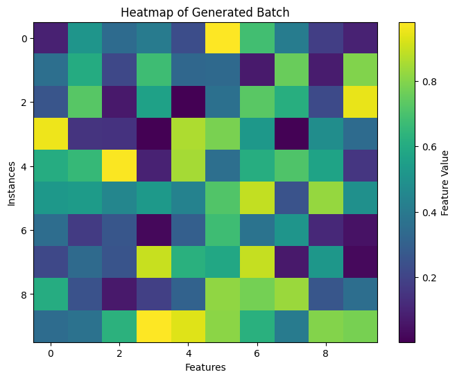

| Foundations of Interpretability: Expanding the Toy Model Framework | |||
| Joseph Atie | Abhilash Rao | Arthur Pommersheim | |
| Final project for 6.7960, MIT | |||
Terminology and Definitions
Before presenting our experimental results, we will define essential terminology to establish a common conceptual framework and ensure clarity throughout this study.Features
The interpretation of what constitutes a feature varies across studies and applications.
In this study, we define features as input qualities that help differentiate one input from another.
Features can sometimes be directly observable, such as curvature or color in an image.
At other times, they may be conceptual and interpretable by humans, as demonstrated by the famous work
of Mikolov et al. [6], which showed that word embeddings can have directions corresponding to semantic
properties. This allows for operations like embedding arithmetic, exemplified by:
V("king") − V("man") + V("woman") = V("queen")
However, some features defy human understanding. Should this surprise us? It did—until we were inspired by the insights of Richard Hamming and Brett Victor in The Unreasonable Effectiveness of Mathematics and Media for Thinking the Unthinkable. Their perspectives help explain why certain concepts remain elusive and how new frameworks can expand our comprehension:
"Just as there are odors that dogs can smell and we cannot, as well as sounds that dogs can hear and we cannot, so too there are wavelengths of light we cannot see and flavors we cannot taste. Why then, given our brains wired the way they are, does the remark 'Perhaps there are thoughts we cannot think,' surprise you?" - Richard Hamming, The Unreasonable Effectiveness of Mathematics
"These sounds that we can't hear, this light that we can't see, how do we even know about these things in the first place? Well, we built tools. We built tools that adapt these things that are outside of our senses, to our human bodies, our human senses. We can't hear ultrasonic sound, but you hook a microphone up to an oscilloscope and there it is. You're seeing that sound with your plain old monkey eyes. We can't see cells and we can't see galaxies, but we build microscopes and telescopes and these tools adapt the world to our human bodies, to our human senses.
When Hamming says there could be unthinkable thoughts, we have to take that as 'Yes, but we build tools [neural networks] that adapt these unthinkable thoughts to the way that our minds work and allow us to think these thoughts that were previously unthinkable." - Brett Victor, Media for Thinking the Unthinkable
Superposition
Imagine you're at a packed movie theater, but instead of seats, you have a limited number of beanbags. Each beanbag
can be shared by multiple people, as long as they squeeze in carefully and don’t completely overlap. Somehow, everyone
manages to sit comfortably, even though the number of beanbags seems too small for the crowd. This is superposition in action. For a quick visual primer we highly recommend viewing [7].
In neural network, superposition is a clever strategy allowing neural networks "to represent more features than they have neurons". They exploit a property of high-dimensional spaces to simulate a model with many more neurons.
Sparsity
Feature Sparsity is a concept rooted in the observation that, in the natural world, many features are sparse—they occur only occasionally. For example, most parts of an image don’t
contain specific objects like a horizontal edge or a dog head, and most tokens in language don’t refer to rare concepts like "Martin Luther King" or "music." This idea builds on
classical work in vision and natural image statistics, where sparsity helps models focus only on the most relevant features at any given time.
In the toy model, feature sparsity is modeled using the probability S, which determines how often a feature in the
input vector is inactive (set to 0). Specifically:
- For a given dimension xi, the feature is set to 0 with probability Si, meaning it is inactive most of the time if Si is high.
- Otherwise, with probability 1 - Si, the feature is active and takes a value uniformly distributed between 0 and 1.
In practice, the toy model we're analyzing in this blog post assumes all features have the same sparsity S, meaning that all features share the same probability of being inactive. This sparse distribution reflects real-world data structures, where only a subset of features is typically relevant at any given time.
To gain a deeper understanding of the concept of sparsity, we modified the toy model to generate three distinct batches with varying levels of feature sparsity:
- S = 0: Features are never set to 0 (all features are active).
- S = 0.5: Features are set to 0 with a probability of 0.5, resulting in approximately half of the features being inactive.
- S = 0.9: Features are set to 0 with a probability of 0.9, making most features inactive.
The figures below illustrate the outputs for these different levels of sparsity, providing insights into how feature activation changes as the sparsity increases.
Figure 1: Output with S = 0 (All features active)

Figure 2: Output with S = 0.5 (Approximately half features active)

Figure 3: Output with S = 0.9 (Most features inactive)

Feature Importance
Imagine packing a suitcase for a trip where certain items, like your passport or medicine, are far more critical than others, such as an extra pair of shoes.
Naturally, you would prioritize these essential items to avoid serious consequences later.
Similarly, in the toy model, not all features are treated equally—some are far more important than others. In the toy model, feature importance assigns weights
Ii to each feature, reflecting its significance in the overall reconstruction. When the model makes predictions, the reconstruction error for each feature is scaled
by its importance. This means that disregarding or poorly reconstructing a highly important feature incurs a much higher cost than for a less important one.
The model is incentivized to focus its representational capacity on preserving more important features, ensuring that key patterns in the data are retained while
less critical ones can be approximated or ignored.